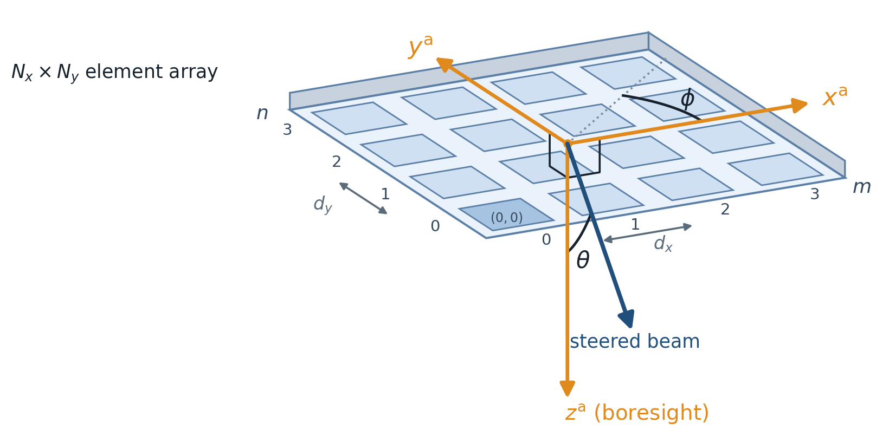
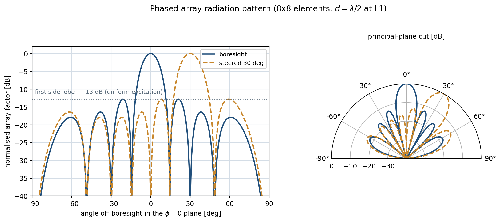
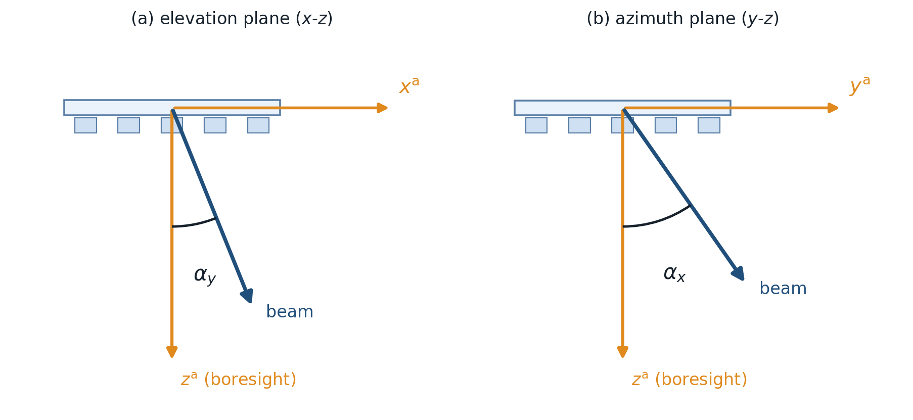

Receiver antenna and pattern generator¶
Two modules model the receiver’s phased-array antenna.
AntennaPatternGenerator computes the radiation
pattern once and writes it to a file; RxAntenna loads that
pattern and, during a run, returns the antenna gain along whatever direction the receiver is looking.
Pattern generator¶
Summary¶
A planar phased array forms a directive beam by the coherent superposition of the fields radiated by its
\(N_x \times N_y\) elements; the geometric part of that superposition – the interference set by the
element positions and excitation phases – is the array factor (AF). AntennaPatternGenerator
evaluates the AF over a \((\theta, \phi)\) grid for each carrier frequency and each commanded steering
direction and serialises it for reuse.


Fig. 7: Geometry of the planar receiver array. The \(N_x \times N_y\) elements are spaced \(d_x\) and \(d_y\) in the antenna frame \((x^{\mathrm{a}}, y^{\mathrm{a}})\); the beam is steered to a polar angle \(\theta\) off boresight \(z^{\mathrm{a}}\) and an azimuth \(\phi\). Elements are indexed \(m = 0 \ldots N_x-1\) along \(x^{\mathrm{a}}\) and \(n = 0 \ldots N_y-1\) along \(y^{\mathrm{a}}\), with the reference element \((0,0)\) (highlighted) at the near corner.¶
The array factor¶
For a planar array with element spacings \(d_x, d_y\), define the per-element phase steps – the phase increment between adjacent elements along each axis:
Here \(k = 2\pi/\lambda\) is the wavenumber (\(\lambda\) the wavelength), \(\theta\) the polar angle off boresight \(z^{\mathrm{a}}\), and \(\phi\) the azimuth around it. Each step is the sum of two contributions:
the spatial (geometric) phase \(k\,d\,\sin\theta\,\cos\phi\) (and \(\sin\phi\) for the \(y\) axis) – the path-length phase difference between adjacent elements for a plane wave in direction \((\theta, \phi)\), fixed by the array geometry; and
the steering phase \(\beta_x, \beta_y\) – the progressive phase applied electronically to point the beam, set in the Steering section ((40)).
The array factor is the product of the two per-axis sums over all elements, where \(m = 0 \ldots N_x-1\) and \(n = 0 \ldots N_y-1\) index the elements along \(x^{\mathrm{a}}\) and \(y^{\mathrm{a}}\) and \(N_x, N_y\) are the number of elements per axis,
In the beam direction the element contributions are co-phased and the AF attains its maximum \(|\mathrm{AF}|_{\max} = N_x N_y\), the coherent array-combining factor (the broadside field relative to a single element). This maximum is governed by the element count alone: the spacing \(d_x, d_y\) sets the beamwidth and the grating-lobe geometry, not the peak amplitude. It is a relative field maximum, not a directivity – the absolute scale enters only through the radiated-power normalisation of Absolute gain and scan loss.
The elements are uniformly excited (unit amplitude, no aperture taper), which gives the narrowest main beam for a given aperture but bounds the side-lobe suppression. With uniform excitation the first side-lobe level depends on the array size – higher (less suppressed) for small arrays – and decreases toward an asymptotic floor of \(\approx -13.3\) dB as the array grows large (the limit of a uniformly illuminated continuous aperture). Adding elements narrows the beam but cannot drive the first side lobe below this floor; lowering it requires an amplitude taper, which is not modelled in this antenna model. Fig. 8 shows a representative principal-plane cut for one array configuration. The stored quantity is the relative power pattern \(20\log_{10}|\mathrm{AF}|\), normalised so its peak is 0 dB; the absolute gain in dBi is recovered later from the directivity (Absolute gain and scan loss).
Note
The sums in (39) are 0-based (\(m = 0 \ldots N_x-1\), \(n = 0 \ldots N_y-1\)), matching
the implementation where numpy.arange enumerates the elements (Fig. 7).
This is identical to the 1-based convention with exponent \(e^{j(m-1)\psi_x}\) used in much of the
antenna literature (e.g. Balanis): both place the corner element at the phase reference, so the element
phases \(\{0, \psi, 2\psi, \ldots, (N_x-1)\psi\}\) – and hence the array factor – are the same. Only
the index label shifts; substituting \(m' = m-1\) maps one form onto the other.


Fig. 8: Example principal-plane (\(\phi = 0\)) array-factor cut, normalised to a 0 dB peak, for a boresight
beam and a beam steered to \(30^\circ\); steering the progressive phase only slides the main lobe
along the axis. Generated by ARCHITECTURE/make_antenna_pattern.py from the simulator’s own
ArrayFactor for an illustrative \(8 \times 8\) half-wavelength array at the L1 carrier (the
side-lobe level shown is specific to this array size).¶
Steering¶
The beam is pointed by the progressive inter-element phases \(\beta_x, \beta_y\): a linear phase ramp across the aperture tilts the in-phase direction off boresight. The steering angles are named after their rotation axis: the elevation tilt \(\alpha_y\) rotates the beam about the \(y\)-axis (the peak moves along \(x^{\mathrm{a}}\), the flight direction) and the azimuth tilt \(\alpha_x\) about the \(x\)-axis (peak along \(y^{\mathrm{a}}\)), so the phases are set to
which cancels the spatial phase term in (38) along the commanded direction so every element adds in phase there. Using this two-plane (sine-space) steering, the beam points along the unit vector \(\hat{d}\), whose Cartesian components in the antenna frame \((x^{\mathrm{a}}, y^{\mathrm{a}}, z^{\mathrm{a}})\) are
Equivalently \(\hat{d} = \sin\alpha_y\,\hat{x}^{\mathrm{a}} + \sin\alpha_x\,\hat{y}^{\mathrm{a}} + \sqrt{1-\sin^2\alpha_x-\sin^2\alpha_y}\;\hat{z}^{\mathrm{a}}\). The \(x\) and \(y\) components are the steering direction cosines (a rotation about \(y\) moves the beam along \(x^{\mathrm{a}}\) and vice versa); the boresight (\(z\)) component is fixed by the unit-length condition \(|\hat{d}| = 1\). For that component to be real the steering angles must satisfy \(\sin^2\left(\alpha_x\right) + \sin^2\left(\alpha_y\right) \le 1\) or the beam would point below the horizon; each per-axis extent must additionally stay strictly inside \((-90^\circ, 90^\circ)\). The loader rejects sweeps that break either bound. Fig. 9 shows these two angles. Half-wavelength element spacing (\(d \le \lambda/2\)) keeps grating lobes out of the visible region across the steering range.


Fig. 9: Two-plane steering angles, subscript-named after the rotation axis. In each principal plane the steering angle is measured directly from boresight \(z^{\mathrm{a}}\) – (a) the elevation tilt \(\alpha_y\) in the \(x\)-\(z\) plane (rotation about \(y\); the peak moves along \(x^{\mathrm{a}}\), the flight direction) and (b) the azimuth tilt \(\alpha_x\) in the \(y\)-\(z\) plane (rotation about \(x\)) – so that \(\sin\alpha_y\) and \(\sin\alpha_x\) are the \(x\) and \(y\) direction cosines of the beam ((41)). A general command applies both at once; the combined angle off boresight is the polar angle \(\theta\) of Fig. 7, with \(\sin\alpha_y = \sin\theta\cos\phi\) and \(\sin\alpha_x = \sin\theta\sin\phi\).¶
Pattern storage and caching¶
Evaluating the AF over the full \((\theta, \phi)\) grid for every steering command and carrier frequency
is the costly step, so the generator computes each pattern once and serialises it to JSON rather than
recomputing it on every run. One file is written per (steering across-track, steering along-track, carrier
frequency) triple, named array_factor_<f>MHz_<across>across_<along>along.json; it stores the normalised pattern
\(20\log_{10}|\mathrm{AF}_n|\) sampled on the \(\theta \in [0^\circ, 180^\circ]\),
\(\phi \in [0^\circ, 360^\circ)\) grid (theta_resolution \(\times\) phi_resolution samples)
together with its steering and frequency metadata. The steering grid is swept per axis from the
along_track_steering / across_track_steering extent ([min, max] in the INI) and the per-axis step counts
along_track_steering_steps / across_track_steering_steps (in simulator_settings.yaml). Each sweep must
include boresight \((0^\circ, 0^\circ)\) – for the symmetric extents that means an odd step count, and an
even count is rejected at load time rather than silently adjusted. A separate set is produced per band, since the electrical spacing
\(k d = 2\pi d / \lambda\) – and therefore the pattern – depends on the carrier frequency.
Regeneration is gated by a signature file (antenna_pattern_metadata.json) recording every
pattern-affecting parameter: element counts, spacings, frequency list, steering sweeps, angular resolutions,
and a generator format version. On start-up the patterns are regenerated only if the signature has changed
or files are missing; otherwise the cached JSONs are reused unchanged. RxAntenna loads this set and
interpolates over it at run time (Absolute gain and scan loss).
- class object_definitions.AntennaPatternGenerator_def.AntennaPatternGenerator(elements_along_x, elements_along_y, d_x, d_y, freqs, across_track_steering, along_track_steering, output_folder, theta_resolution=180, phi_resolution=360)[source]¶
Generate (or reuse cached) phased-array radiation-pattern files for the receiver antenna.
Uses two-plane (sine-space) steering: along-track tilts the beam about the array y-axis (peak moves along x^a, the flight direction) and across-track about the x-axis (peak moves along y^a), so the beam direction is
(sin along, sin across, sqrt(1 - sin^2 across - sin^2 along))and the steering rectangle must stay inside the unit disk (sin^2 across + sin^2 along <= 1).- Parameters:
elements_along_x (int) – Number of array elements per axis.
elements_along_y (int) – Number of array elements per axis.
d_x (float) – Element spacing per axis [m].
d_y (float) – Element spacing per axis [m].
across_track_steering (list) –
[start_deg, end_deg, n_steps]beam-tilt sweep: across-track tilts the peak along y^a (rotation about the x-axis), along-track along x^a (rotation about the y-axis).along_track_steering (list) –
[start_deg, end_deg, n_steps]beam-tilt sweep: across-track tilts the peak along y^a (rotation about the x-axis), along-track along x^a (rotation about the y-axis).output_folder (str) – Where to write the generated pattern files.
theta_resolution (int, optional) – Polar-angle samples over 0..180 deg off boresight (default 180).
phi_resolution (int, optional) – Azimuth samples over 0..360 deg around boresight (default 360).
Receiver antenna¶
Summary¶
RxAntenna is the run-time antenna. It loads the generated patterns and, given a look direction in the
antenna frame, returns the gain there. The receiver auto-steers to each reflection, so the gain it reports
is the steered-beam value used in the link budget. It also owns the footprint – the ground area inside
a chosen gain contour (footprint_dB, e.g. -1 dB) – which sets the illuminated area for distributed
targets.
Method |
What it does |
|---|---|
|
Gain [dBi] along a look direction (optionally at a given steering). |
|
The azimuth/elevation steering that points the beam at a direction (or |
Absolute gain and scan loss¶
The link budget needs an absolute gain in dBi, not the 0 dB-normalised pattern. RxAntenna recovers it
from the directivity of the steered beam, obtained by integrating the normalised power pattern over the
front hemisphere (\(\theta \le 90^\circ\)),
with \(\mathrm{AF}_n = \mathrm{AF}/|\mathrm{AF}|_{\max}\) the array factor normalised to unit peak. The front-hemisphere domain is the shielded-panel assumption: the array is mounted on the Earth-facing spacecraft face over a ground plane, so the rear half-space is shielded and the isotropic-element array factor’s mirror back lobe (\(|\mathrm{AF}|\) depends on \(\theta\) only through \(\sin\theta\)) carries no physical power. For the uniform excitation used here \(|\mathrm{AF}|_{\max} = N_x N_y\) ((39)), so \(\mathrm{AF}_n = \mathrm{AF}/(N_x N_y)\) and equivalently \(D = 4\pi\,(N_x N_y)^2 / \int_\mathrm{front} |\mathrm{AF}|^2\, d\Omega\). The gain along a look direction \(\hat{r}\) is then the directivity of the commanded beam plus the relative pattern there,
Because \(D\) is evaluated from the steered array factor, its idealised scan dependence is captured: tilting the beam changes the solid-angle integral and normally lowers peak directivity. Element-pattern scan loss, impedance mismatch, mutual coupling, finite ground plane and radome effects are not included. In practice the gain is bilinearly interpolated, in linear power, across the four stored steering patterns bracketing the commanded direction.
Note
Spacing dependence of the directivity. The combining factor \(|\mathrm{AF}|_{\max} = N_x N_y\) ((39)) is fixed by the element count and is independent of \(d_x, d_y\). The directivity is not that maximum but the peak-to-mean of the power pattern, \(D = 4\pi\,|\mathrm{AF}|_{\max}^2 / \oint|\mathrm{AF}|^2\,d\Omega\) (equivalently (42)), in which the spacing enters only through the denominator – the radiated power, i.e. the pattern shape. For a one-sided uniformly illuminated aperture, the standard reference approximation is
so broadside directivity tracks aperture area until grating lobes appear. The isotropic-element array factor is mirror-symmetric in \(\sin\theta\), so over the full sphere it would radiate an equal rear lobe; the front-hemisphere normalisation of (42) is the shielded-panel (ground-plane) assumption that removes that fictitious lobe from the power budget. With it, the computed broadside directivity sits just below the aperture bound – e.g. 14.9 dBi against the 15.8 dBi bound for the configured \(3 \times 4\) half-wavelength array, the residual being the discrete array-factor taper – and runtime geometry additionally rejects rear-hemisphere looks.
- class object_definitions.Rx_antenna_def.RxAntenna(settings=None)[source]¶
Receiver antenna: holds the phased-array patterns and returns gain along a look direction.
Built from the
[ANTENNA]settings. It loads the generated radiation-pattern files, steers the beam analytically toward a requested direction, and reports the gain there (in dBi). It also owns the footprint contour used to project the beam onto the ground.- Parameters:
settings (dict) – Antenna configuration with keys:
antenna_pattern_files({(across_track, along_track, frequency_mhz) -> json path}),polarizations(e.g.["LHCP", "RHCP"]),bands(e.g.["L1", "L5"]), andfootprint_dB(the footprint contour level, below 0 dB).
Notes
The per-axis maximum steering angles are derived from the generated steering grid (the largest
|across_track|and|along_track|), not set directly.
Module Assumptions and Limitations¶
Ideal isotropic elements over an ideal ground plane. The pattern is the array factor only. The rear hemisphere is treated as shielded by the Earth-facing spacecraft panel: rear-lobe power is excluded from the directivity normalisation and rear look directions are rejected at runtime. A real element pattern (with its own off-axis roll-off), radiation efficiency, mismatch, mutual coupling, finite ground plane and radome are absent; absolute gain therefore remains an idealised value.
Sine-space steering limit. Steering is bounded by
sin^2(az) + sin^2(el) <= 1; sweeps beyond that are rejected.Patterns are generated, then cached.
RxAntennaconsumes whatever files the generator wrote; a changed array geometry needs the patterns regenerated.Pattern peak normalised to 0 dB. The footprint contour must be below 0 dB.
Geographic footprint polygons. Ray/surface intersections are converted directly to longitude and latitude before building a Shapely polygon. Footprints crossing the antimeridian are not unwrapped and can be represented incorrectly.
Validation and Tests¶
Test module |
What it pins |
|---|---|
|
Golden-file regression of the gain pipeline (reference in |
|
Shared lightweight antenna fixture used across the suite. |
User Guide¶
The array is configured in two INI sections plus the simulator YAML:
[ANTENNA PATTERN]– the array geometry that drives the generator:elements_along_x/elements_along_y,d_x/d_y(element spacing; commonly about half a wavelength to avoid grating lobes), and thealong_track_steering/across_track_steeringextent ([min, max]; along-track = flight direction / antenna elevation, across-track = antenna azimuth).[ANTENNA]– what the receiver uses:bandsandfootprint_db(the footprint contour level).simulator_settings.yaml(antenna_patternblock) – the engine/numerical settings: the pattern angular resolutiontheta_resolution/phi_resolutionand the steering step countsalong_track_steering_steps/across_track_steering_steps.
When [ANTENNA PATTERN] is present the patterns are (re)generated before the run; otherwise the cached
files are reused.
References¶
Balanis, C. A., Antenna Theory: Analysis and Design, 4th ed., Wiley, 2016 (array factor, planar arrays).
Mailloux, R. J., Phased Array Antenna Handbook, 3rd ed., Artech House, 2017.